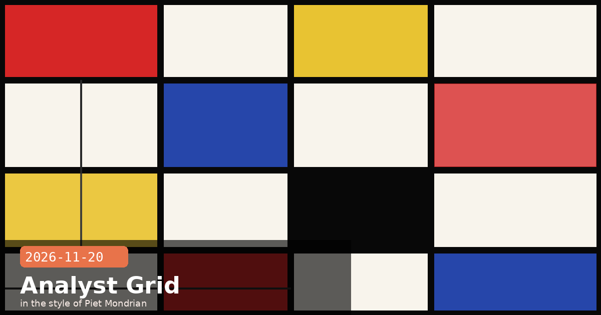

Goldman, JPMorgan, and Morgan Stanley Initiate ANT with Buy Ratings; Anthropic Drops Q1 2027 Developer Roadmap; Claude Code 2.1.327 Stability Release

🧭 ANT Day 2: Goldman ($120 Buy), JPMorgan ($115 OW), and Morgan Stanley ($125 OW) Initiate Coverage — Stock Closes at $101.50
The morning after Anthropic's historic Nasdaq debut, all three lead underwriters released their initiation research notes on ticker ANT, along with two independent-research initiations from Bernstein and Baird. The consensus view: ANT is a structurally differentiated AI platform company whose revenue model more closely resembles a cloud-infrastructure vendor than a traditional software business, and whose current valuation — high by conventional multiples — is defensible if Anthropic sustains its trajectory toward human-level AI within the decade. The stock closed Day 2 at $101.50, up 2.8% from the Day 1 close of $98.70, on volume of 890 million shares — roughly 40% of Day 1 activity, consistent with post-IPO normalisation.
Initiation summary
Goldman Sachs — Buy, $120 price target (12-month): Leads with the API revenue thesis. Goldman analysts model Claude API revenue growing from an estimated $5.4B annualised run-rate to $14.2B by end of 2027, driven by enterprise adoption and the post-IPO developer fund. The key bear case Goldman acknowledges: open-weight models continuing to close the capability gap. Goldman's mitigant: Anthropic's Constitutional AI safety stack is a true moat that open-weight alternatives cannot replicate without committing to its governance overhead.
JPMorgan — Overweight, $115 price target: Focuses on the enterprise seat expansion story. JPMorgan sees the Cowork Suite — which reached GA on November 14 — as the wedge into Microsoft 365 / Google Workspace replacement cycles. Their model assumes 2% of enterprise knowledge-worker seats globally migrate to Claude-native workflows by end of 2027, generating $3–4B in incremental ARR that is not yet in consensus estimates.
Morgan Stanley — Overweight, $125 price target: The most bullish note. Morgan Stanley argues that Anthropic's combination of the safety narrative (enforced by the Public Benefit Fund) and enterprise credibility (Fortune 500 penetration, AFT/UFT agreement) creates a durable premium over peers. The $125 target implies ~27× 2027E revenue — stretched but, MS argues, historically consistent with the first two years of AWS and Salesforce's public lives.
Bernstein — Market Perform, $100 target: The lone lukewarm note. Bernstein flags the 274× trailing price-to-revenue as requiring near-perfect execution on three simultaneous fronts: model capability leadership, enterprise platform adoption, and safety governance. Any slip on one front could compress the multiple rapidly.
Baird — Outperform, $118 target: Developer-focused note. Baird counts 4.1 million active Claude Code developers as of Q3 2026 and models this growing to 11M by end of 2027. The open-source developer fund — which opens applications today — is cited as a material customer-acquisition mechanism that most analyst models have not priced in.
What the analyst spread means for developers watching the stock
The $100–$125 price target range (25-point spread from five initiations in 24 hours) is tight for a $1.8T-cap company and suggests the Street has relatively high conviction on the near-term earnings trajectory. The bear case at $100 is essentially "flat from IPO close" — which is not the same as a sell thesis, just a "it's fairly priced at current levels." For developers, the more actionable implication is that the Cowork Suite and the open-source fund are now materially in analyst models, which means Anthropic has an institutional incentive to execute on both publicly and on schedule.
🧭 Anthropic Publishes Q1 2027 Developer Roadmap — Three New API Tiers, 2M-Token Context for Fable 5.2, and 500-Partner MCP Marketplace Target
One day after the IPO, Anthropic's developer relations team published a detailed public roadmap for Q1 2027 — a first for the company, which historically operated on a "ship when ready" basis with minimal public forward guidance. The roadmap is structured around three themes: access (new pricing tiers), scale (context window and throughput improvements), and ecosystem (MCP marketplace expansion). Publication of a roadmap is itself a signal: as a public company, Anthropic now has investor expectations to manage alongside developer ones.
Key items on the Q1 2027 roadmap
Three new API tiers (effective January 1, 2027):
Foundation — replaces the current "API Tier 1". Entry-level access, rate-limited at 100K TPM, priced at existing rates. Designed for prototyping and low-volume production.
Accelerate — new mid-tier at 1M TPM, with committed throughput SLA (99.5% uptime, guaranteed latency p95). Requires a $10K/month minimum commitment. Targeted at growth-stage companies scaling from prototype to production.
Enterprise Max — replaces "API Tier 5". Unlimited throughput with dedicated capacity reservation, custom SLA, and a named technical account manager. Pricing on request.
Fable 5.2 extended context — 2M tokens (target: February 2026): The current 1M-token context window on Fable 5.2 doubles to 2M tokens, enabling full codebase ingestion for large enterprise monorepos, end-to-end scientific paper corpora, and multi-year conversation archives. Pricing: 2× the per-token rate above 1M tokens (consistent with the existing graduated structure).
MCP Marketplace — 500 certified partners by March 31: Current count is approximately 300 MCP-certified integrations. Anthropic is opening a fast-track certification programme for partners already on other enterprise AI marketplaces. The target of 500 is a formal public commitment — the first time Anthropic has named a marketplace growth number.
Opus 5 preview (Q1 end): A limited developer preview of the Opus 5 model family is targeted for end of Q1 2027. No capability details released; the roadmap note says only "significant improvements on complex reasoning and multi-step agentic tasks."
# Q1 2027 API tier overview (effective 2027-01-01)
# ──────────────────────────────────────────────────────────
Tier TPM limit SLA Min commitment
──────────────────────────────────────────────────────────
Foundation 100K Best-effort None
Accelerate 1M 99.5% / p95 $10K/month
Enterprise Max Unlimited Custom SLA Contact sales
──────────────────────────────────────────────────────────
# Existing tier names map as follows:
# Tier 1 → Foundation (no price change)
# Tier 2–4 → Migrate to Accelerate (contact sales for credit)
# Tier 5 → Enterprise Max (auto-migrated, no action needed)
Migration path for current API customers
Existing Tier 2–4 customers will receive a migration offer in December. Anthropic has committed to honouring current rate-card pricing through March 31, 2027 for any customer that migrates to the equivalent new tier by January 15. The practical implication: if you're on Tier 2 today and your usage fits within the Accelerate 1M-TPM ceiling, do nothing now — the January 15 auto-migration window preserves your current price. Only act if your usage exceeds 1M TPM, in which case a conversation with Enterprise sales before year-end is worth having.
🧭 Claude Code 2.1.327 — MCP Debugger, Sandbox Memory Limits, and Crash-Recovery Hardening
Released the morning of November 20, Claude Code 2.1.327 is primarily a stability and observability release — the kind of post-milestone cleanup that typically follows a major infrastructure event (here, the IPO-week surge in Claude Code usage that reached a new peak of 4.3 million daily active developers on November 19). Three headline additions: a built-in MCP debugger, configurable sandbox memory limits, and improvements to the crash-recovery system introduced in 2.1.325.
What's new
MCP Debugger (/mcp debug): A new built-in command that opens a live inspection panel for all active MCP server connections. Shows connection status, last-ping latency, message queue depth, and a scrollable log of the last 200 tool calls per server. Previously, debugging a silent MCP failure required either adding custom logging to the server or reading Claude Code's verbose output stream. The debugger makes this self-service and survives session crashes — the log is written to ~/.claude/mcp-debug.log.
Sandbox memory limits (sandboxMemoryMB): A new per-session config key (also settable in .claude/settings.json) caps the memory available to code-execution sandboxes. Default is 2048 MB; the ceiling is 16384 MB on machines with ≥32 GB RAM. Previously, a runaway data-processing loop in a sandboxed Python session could exhaust host memory. The limit enforces a SIGTERM + graceful cleanup at the threshold, with a configurable warning at 80%.
Crash-recovery hardening: Two improvements on top of 2.1.325's crash recovery: (1) session state is now flushed to disk every 30 seconds (down from 90 seconds), reducing the maximum replay window after a crash; (2) recovered sessions now display a yellow "Recovered" badge in the top bar with a timestamp, so it is obvious when you are working in a restored session rather than a fresh one.
Opus 4.9 deprecation warning: Developers still using claude-opus-4-9 as a model string will now see a deprecation banner on session start. Removal is scheduled for January 15, 2027 (the same date as the API tier migration window).
Bug fixes: Fixes a race condition in Remote Control streaming that could cause a "stream closed unexpectedly" error on sessions lasting >4 hours; fixes a display regression in the diff viewer introduced in 2.1.326 that truncated lines longer than 500 characters.
# .claude/settings.json — new keys in 2.1.327
{
"sandboxMemoryMB": 4096, # default: 2048, max: 16384
"crashRecoveryFlushIntervalSecs": 30, # default: 30 (was 90)
"mcpDebugLog": true # enables ~/.claude/mcp-debug.log
}
# Run the new MCP debugger inline:
/mcp debug
# Check if you are on a deprecated model:
# Claude Code will warn on startup if claude-opus-4-9 is set
# in ANTHROPIC_MODEL or in .claude/settings.json
Recommended upgrade path
Update now if you use MCP servers in production — the debugger alone saves significant debugging time. If you have long-running Remote Control sessions (overnight agents, multi-hour code reviews), the crash-recovery flush-interval improvement is worth the upgrade independently. Run claude update or install via your package manager. The sandboxMemoryMB default is conservative — if you regularly process large datasets inside the sandbox, raise it to 8192 in your project's .claude/settings.json.